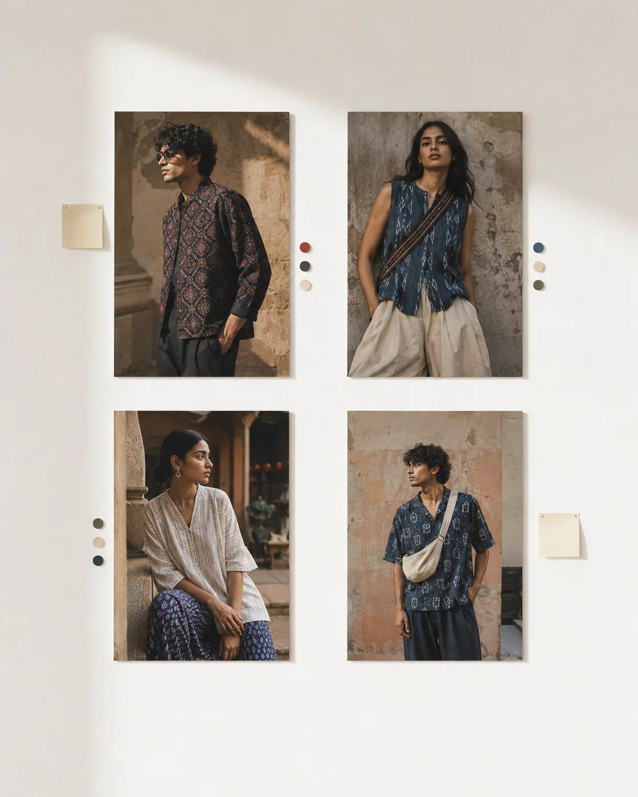
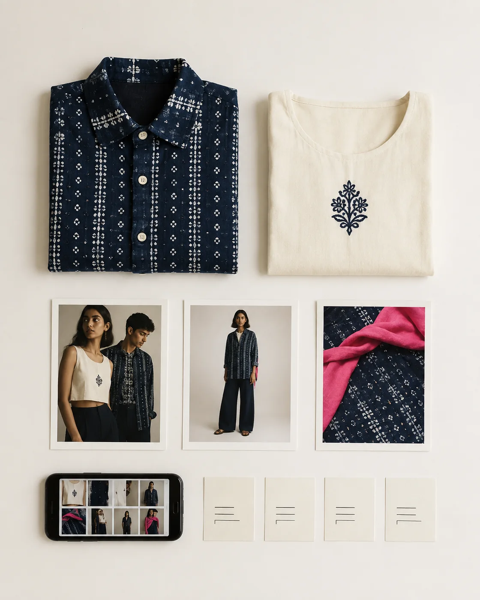

01 / CURRENT STATE
The drop date is fixed. The direction isn’t.
AFTERHOURS is a fictional Mumbai-born label blending contemporary streetwear with Indian textile references. It launches frequent product drops, but briefs arrive through chat, email and voice notes. Brand, merchandising and social teams request competing changes; creators cannot tell which feedback wins, and the same campaign exists in too many “final” files.
- No single source of truth.
- Unclear decision ownership.
- Feedback describes preferences rather than objectives.
- Channel specifications and QA arrive too late.
02 / THE SYSTEM
Five small controls.
Drop intake
Objective, audience, products, channels, owner and non-negotiables.
RACI-lite
One final approver, named channel contributors and response windows.
Review rhythm
Concept, sample, crop and final reviews at visible checkpoints.
Launch control
Version rules, channel specs, release checklist and delivery folders.
03 / FLOW
A fast lane from sample to scroll.
Intake
Lock products, audience, channels and drop story.
Align
Approve one campaign direction and decision owner.
Review
Consolidate brand, commerce and channel feedback.
Close
QA crops, links, metadata and final channel packs.
04 / MEASURES
Did the process help?
| SIGNAL | BEFORE | TARGET BEHAVIOUR |
|---|---|---|
| Feedback sources | Chat, email and voice notes | One consolidated review per checkpoint. |
| Approval ownership | Assumed | Named for each drop and channel. |
| Revision causes | Preferences and surprises | Decisions traced to objectives. |
05 / REFLECTION
What this demonstrates.
For a fast-moving fashion brand, process cannot feel like paperwork. The system has to protect speed and cultural relevance while making ownership, decisions and launch readiness unmistakable.
Skills: process mapping, stakeholder alignment, ownership design, feedback management, documentation and quality control.
06 / DROP CONTROL
Fast energy. Clear system.
The creative language stays raw and current; underneath it, every brief, review, file and handoff follows one visible route.

